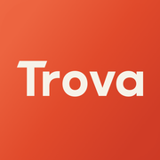
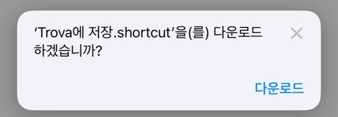
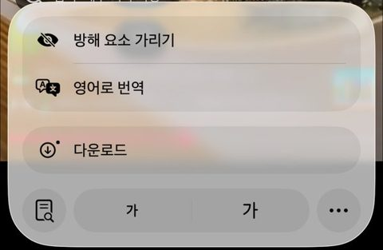
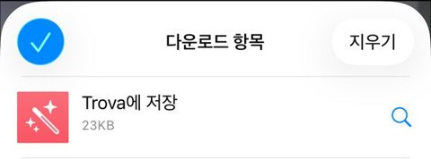
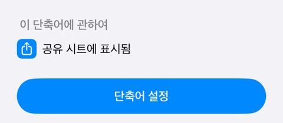
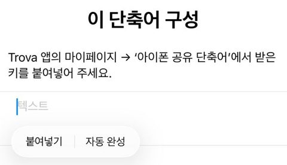

홈 화면에 Trova 추가하기
- Safari에서 Trova 열기꼭 Safari로 열어 주세요. 인스타·카톡 안에서 열면 홈 화면에 추가가 안 돼요.
- 아래 ⋯→공유
- 더 보기→홈 화면에 추가→추가‘웹 앱으로 열기’는 켜 둔 채로 두세요.
- 홈 화면 아이콘으로 열고 로그인카카오나 구글 계정으로 바로 시작해요.
주소 app.trovapp.workers.dev

Trova저장만 해 두고 잊은 여행 릴스·쇼츠
가고 싶어 저장해 둔 영상, 다시 돌려 보며 장소 이름을 찾고 있나요? Trova로 공유만 하면 영상 속 장소를 지도에 담고 하루 일정까지 짜 둬요.
무료 · 앱스토어 없이 1분이면 시작해요
영상 하나에서 장소를 찾아 일정으로 만들기까지, 원래 이만큼 걸렸어요.
영상을 몇 번씩 멈춰 가며 가게 이름 받아 적기
댓글 뒤져서 “여기 어디예요?” 답 찾기
지도 앱에 한 곳씩 검색해 저장하기
공유 한 번이면 장소·지도·일정이 한 번에
쓰는 휴대폰을 고르세요. 처음 한 번만 하면 돼요.
주소 app.trovapp.workers.dev
아이폰은 홈 화면 앱이 공유 목록에 바로 뜨지 않아요. ‘Trova에 저장’ 단축어를 한 번 연결해 두면 공유 버튼만으로 저장돼요.





주소 app.trovapp.workers.dev
안드로이드는 공유 목록에 Trova가 바로 보여서 단축어를 연결할 필요가 없어요.